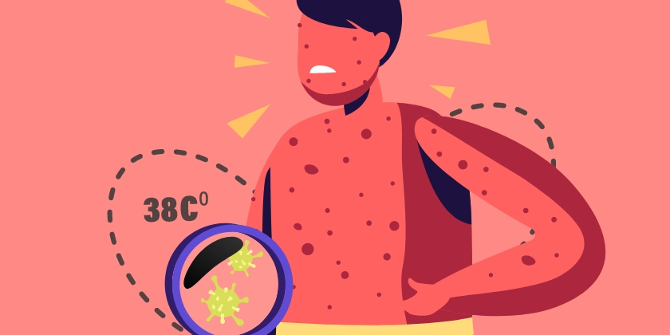

Varicela
es una infección causada por el virus de la varicela-zóster. Causa una erupción en la piel con picazón y pequeñas ampollas con líquido. La varicela es muy contagiosa para personas que no han tenido la enfermedad antes o no se han vacunado. En la actualidad, hay una vacuna disponible que protege a los niños contra la varicela. Los Centros para el Control y la Prevención de Enfermedades (CDC, por sus siglas en inglés) de Estados Unidos recomiendan la vacunación dentro del programa de rutina.
La vacuna contra la varicela es una forma segura y eficaz de evitar la enfermedad y sus posibles complicaciones.
Sintomas
La erupción de ampollas que dan comezón causada por la infección de varicela se presenta de 10 a 21 días después de la exposición al virus y, generalmente, dura entre cinco y 10 días. Otros signos y síntomas, que pueden aparecer uno o dos días antes de la erupción, incluyen los siguientes:
- Fiebre
- Pérdida del apetito
- Dolor de cabeza Cansancio
- sensación de malestar general
Una vez que aparece la erupción de la varicela, pasa por tres fases:
- Bultos rojos o rosados elevados (pápulas), que brotan durante varios días
- Pequeñas ampollas llenas de líquido (vesículas), que se forman en aproximadamente un día y luego se rompen y drenan
- Costras y escaras que cubren las ampollas abiertas y tardan varios días en curarse
Seguirán apareciendo nuevos bultos por varios días, de manera que puedes tener las tres fases de la erupción (bultos, ampollas y lesiones con costras) al mismo tiempo. Puedes contagiar con el virus a otras personas durante un máximo de 48 horas antes de que aparezca la erupción, y seguirás siendo contagioso hasta que todas las ampollas se hayan cubierto de costra.
En general, la enfermedad es leve en niños sanos. En casos graves, la erupción puede cubrir el cuerpo entero y se pueden formar lesiones en la garganta, los ojos y las membranas mucosas de la uretra, el ano y la vagina.